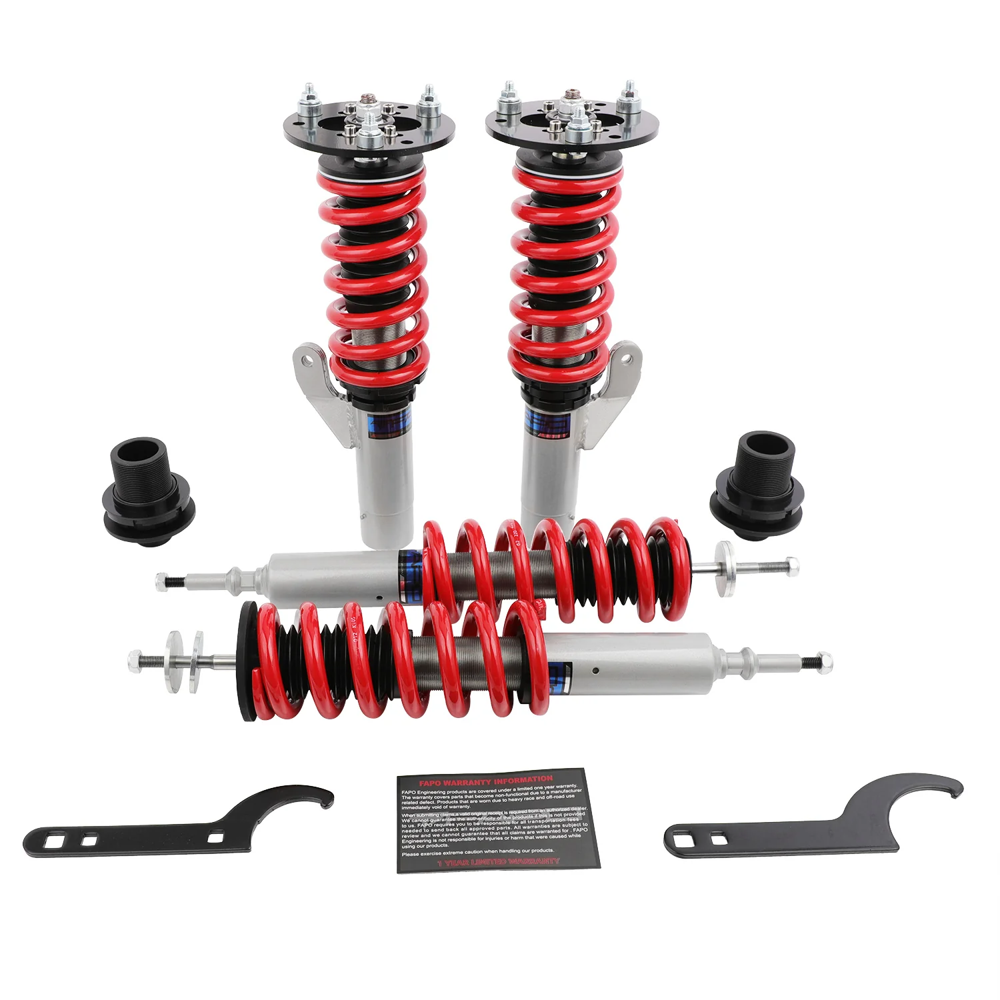

1 / 14Zawieszenie gwintowane do BMW 1 Series 1st Gen E81/E82/E87/E88 2004-2014 PS006910
Zastosowanie: BMW serii 1 pierwszej generacji E81/E82/E87/E88 2004-2014 Zawartość zestawu: Gwinty przednie × 2 szt Gwinty tylne × 2 szt Klucz × 2 szt Cechy produktu: Konstrukcja amortyzatora jednorurowego zapewnia większą pojemność oleju i gazu. Regulowana wysokość jazdy. Regulowane napięcie sprężyny wstępnej. Sprężyna o dużej wytrzymałości na rozciąganie — przetestowana w ponad 600 000 cyklach przy zniekształceniu…
Application: BMW 1 Series 1st Gen E81/E82/E87/E88 2004-2014 Package Includes: Front coilovers × 2 pcs Rear coilovers × 2 pcs Wrench × 2 pcs Features: Mono-tube shock design, provides larger capacity of oil and gas. Adjustable ride height. Adjustable pre-load spring tension. Hi Tensile performance spring - tested over 600,000 cycles with less than 0.04% distortion. Special surface treatment improves durability and performance. All inserts come with fitted rubber boots to protect the damper and keep clean. Improve your handling performance without sacrificing comfortable ride. A fast and affordable way to easily upgrade your car's appearance. Easy installation with right tools. Ideal for any track, drift, and fast road; can also be used for daily driving. The accessories in the photos are included. Default 1-year warranty for any manufacturing defect, upgrade to 2 years with our Extended Warranty Program. Technical Specifications: Spring rate Front: 10 kg/mm Spring rate Rear: 12 kg/mm Adjustable height: Yes Adjustable camber plate: Only Front coilovers Adjustable damper: Non Adjustable Damper Force Warranty All the items carry a standard 1 year warranty from the date of purchase. Proof of purchase is required and it's better to send us your order number. To speed up warranty claims, please provide images and as much detailed documentation as possible. Pictures and videos are usually sufficient, and we do not require the defective items to be returned. Sometimes we may ask for more data to confirm the problem, which helps us improve the fix.
1899,99 PLN
Opis produktu
Zastosowanie:
- BMW serii 1 pierwszej generacji E81/E82/E87/E88 2004-2014
Zawartość zestawu:
- Gwinty przednie × 2 szt
- Gwinty tylne × 2 szt
- Klucz × 2 szt
Cechy produktu:
- Konstrukcja amortyzatora jednorurowego zapewnia większą pojemność oleju i gazu.
- Regulowana wysokość jazdy.
- Regulowane napięcie sprężyny wstępnej.
- Sprężyna o dużej wytrzymałości na rozciąganie — przetestowana w ponad 600 000 cyklach przy zniekształceniu mniejszym niż 0,04%. Specjalna obróbka powierzchni poprawia trwałość i wydajność.
- Do wszystkich wkładek dołączone są gumowe buty chroniące amortyzator i utrzymujące je w czystości.
- Popraw swoje właściwości jezdne, nie rezygnując z komfortu jazdy.
- Szybki i niedrogi sposób na łatwą poprawę wyglądu Twojego samochodu.
- Łatwa instalacja przy użyciu odpowiednich narzędzi.
- Idealny na każdy tor, drift i szybką drogę; można używać także do codziennej jazdy.
- Akcesoria widoczne na zdjęciach są wliczone w cenę.
- Standardowa roczna gwarancja na każdą wadę produkcyjną, możliwość rozszerzenia do 2 lat w ramach naszego programu rozszerzonej gwarancji.
Dane techniczne:
- Twardość sprężyny Przód: 10 kg/mm
- Twardość sprężyny Tył: 12 kg/mm
- Regulowana wysokość: Tak
- Regulowana płyta pochylenia: tylko przednie gwinty
- Regulowany amortyzator: Nieregulowana siła amortyzatora
Gwarancja
Wszystkie produkty objęte są standardową roczną gwarancją liczoną od daty zakupu. Wymagany jest dowód zakupu i najlepiej przesłać nam numer zamówienia. Aby przyspieszyć roszczenia gwarancyjne, prosimy o dostarczenie zdjęć i możliwie szczegółowej dokumentacji. Zdjęcia i filmy są zazwyczaj wystarczające i nie wymagamy zwrotu wadliwych produktów. Czasami możemy poprosić o więcej danych, aby potwierdzić problem, co pomoże nam ulepszyć rozwiązanie.
Application:
- BMW 1 Series 1st Gen E81/E82/E87/E88 2004-2014
Package Includes:
- Front coilovers × 2 pcs
- Rear coilovers × 2 pcs
- Wrench × 2 pcs
Features:
- Mono-tube shock design, provides larger capacity of oil and gas.
- Adjustable ride height.
- Adjustable pre-load spring tension.
- Hi Tensile performance spring - tested over 600,000 cycles with less than 0.04% distortion. Special surface treatment improves durability and performance.
- All inserts come with fitted rubber boots to protect the damper and keep clean.
- Improve your handling performance without sacrificing comfortable ride.
- A fast and affordable way to easily upgrade your car's appearance.
- Easy installation with right tools.
- Ideal for any track, drift, and fast road; can also be used for daily driving.
- The accessories in the photos are included.
- Default 1-year warranty for any manufacturing defect, upgrade to 2 years with our Extended Warranty Program.
Technical Specifications:
- Spring rate Front: 10 kg/mm
- Spring rate Rear: 12 kg/mm
- Adjustable height: Yes
- Adjustable camber plate: Only Front coilovers
- Adjustable damper: Non Adjustable Damper Force
Warranty
All the items carry a standard 1 year warranty from the date of purchase. Proof of purchase is required and it's better to send us your order number. To speed up warranty claims, please provide images and as much detailed documentation as possible. Pictures and videos are usually sufficient, and we do not require the defective items to be returned. Sometimes we may ask for more data to confirm the problem, which helps us improve the fix.
FAPO Polska
Ten produkt obsługujemy lokalnie
Autoryzowana obsługa
FAPO Polska prowadzi katalog, kontakt i zamówienia bez odsyłania klienta do zewnętrznych sklepów.
Dobór po aucie
Sprawdzamy dopasowanie produktu do pojazdu, rocznika i wersji przed finalizacją zamówienia.
Wsparcie po zakupie
Masz kontakt w Polsce w sprawach zamówień, wysyłki, gwarancji i zwrotów.